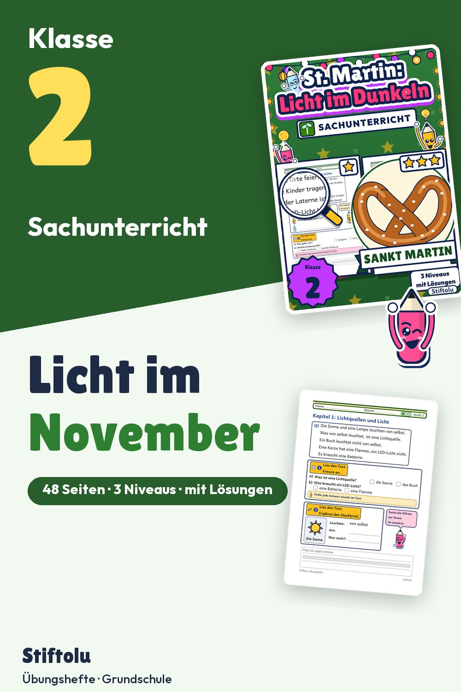

Werbung · Übungsheft von Stiftolu
Licht und Dunkelheit im November – Sachunterricht Klasse 2 mit Laternenumzug

Im November wird es früh dunkel, und genau dort setzt dieses Sachunterricht-Material für Klasse 2 an: Lichtquellen erkunden, LED-Licht und Kerze vergleichen, Tag und Nacht im Jahreskalender einordnen. Sicherheitsregeln für den Laternenumzug gehören dazu, in den Laternen steckt nur elektrisches Licht. Sachunterricht-Material mit 48 Seiten, 3 Niveaus, Lösungen und Handreichung ist erhältlich auf eduki.